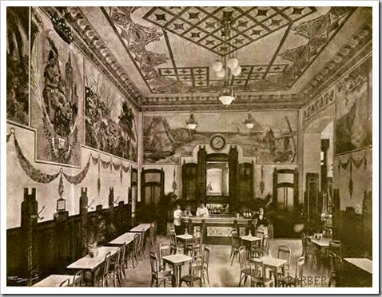

El tiempo|Visita Valencia|Aeropuerto de Valencia
Necesitas un descanso. tienes ganas de un buen café, entra en nuestra caftería. Desconecta y disfruta de bocados preparados con ingredientes selectos por nuestros profesionales
Grupo las horas somos una empresa líder en el sector de la restauración premium con cafeterías y restaurantes situados en los enclaves más emblemáticos de las ciudades de Madrid, Valencia, Barcelona y Sevilla. Nuestros locales ubicados siempre en enclaves privilegiados se caracterizan por una arquitectura y decoración únicas, así como por una cuidada presentación de su comida, siempre de máxima calidad. somos música, arte y cultura, pero sobre todo, somos un grupo de personas trabajando para hacer sentir experiencias únicas a nuestros clientes.

Jamón ibérico de bellota cinco jotas 5J al corte, 50gr-12,50€
pan de cristal y tomate /100gr-22,50€
Anchoas 000 López del Cantábrico sobre base de 2,95€
tomate rayado (ud.)
Ensaladilla rusa 8,50€
Nuestro ceviche de corvina del Mediterráneo con 12,50€
aliño de maracuyá y granizado de naranjas Valencianas